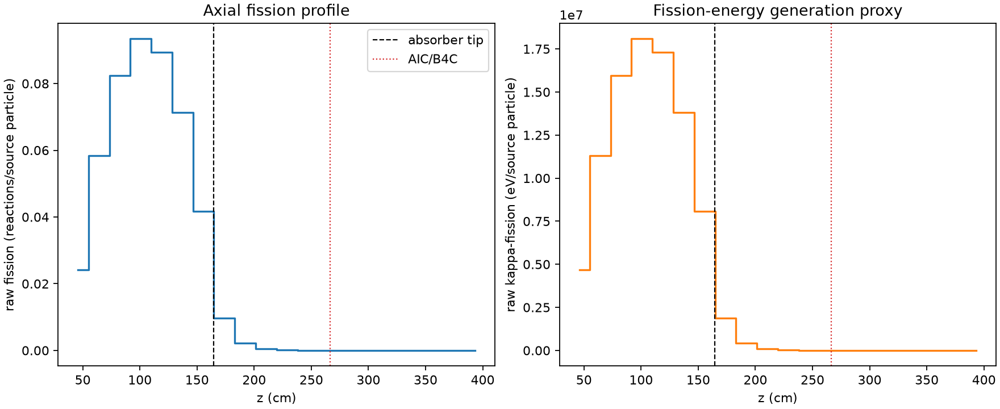
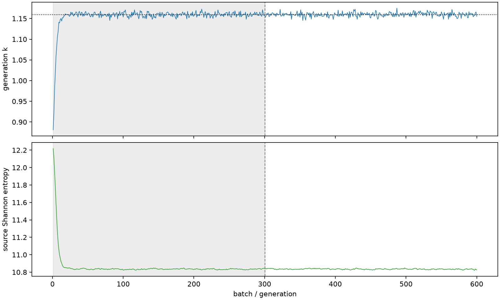

| field | value |
|---|---|
| experiment | V2-STAGE_128_OGRENCI_03-0009 |
| k | 1.1596907297951091 |
| MC standard error | 0.000194993031105673 |
| seconds | 978.5255313970047 |
| acceptance | not_assessed |
| convergence | review_required |
Completed is output integrity only; physical and statistical review required. Zero tallies do not prove zero production or zero uncertainty.
| diagnostic | value |
|---|---|
| geometric fuel voxels | 5280 |
| zero fission tally voxels | 1405 |
| low signal fuel voxels | 2374 |
| low signal fission share | 8.447197601483452e-05 |
| low signal kappa share | 8.45142046431341e-05 |
| important fission share | 0.9500914642954885 |
| previous filter included | 2906 |
| duration estimate s | 1562.5173488400023 |
| actual minus estimate s | -583.9918174429977 |
| fission relative MC error | statistics |
|---|---|
| all_geometric_fuel | {"voxels": 5280, "positive_mean_voxels": 3875, "zero_mean_voxels": 1405, "undefined_relative_error_voxels": 1405, "median": 0.015210591339958685, "p95": 0.8936320834535465, "maximum": 1.0000000000000002} |
| low_signal | {"voxels": 2374, "positive_mean_voxels": 969, "zero_mean_voxels": 1405, "undefined_relative_error_voxels": 1405, "median": 0.5290917346313737, "p95": 1.0, "maximum": 1.0000000000000002} |
| important_95pct | {"voxels": 1725, "positive_mean_voxels": 1725, "zero_mean_voxels": 0, "undefined_relative_error_voxels": 0, "median": 0.005947139297389005, "p95": 0.009862688606390238, "maximum": 0.0110653018039092} |
| outside_previous_filter | {"voxels": 2374, "positive_mean_voxels": 969, "zero_mean_voxels": 1405, "undefined_relative_error_voxels": 1405, "median": 0.5290917346313737, "p95": 1.0, "maximum": 1.0000000000000002} |
| kappa_fission relative MC error | statistics |
|---|---|
| all_geometric_fuel | {"voxels": 5280, "positive_mean_voxels": 3875, "zero_mean_voxels": 1405, "undefined_relative_error_voxels": 1405, "median": 0.015190738867252904, "p95": 0.8921026562096093, "maximum": 1.0000000000000002} |
| low_signal | {"voxels": 2374, "positive_mean_voxels": 969, "zero_mean_voxels": 1405, "undefined_relative_error_voxels": 1405, "median": 0.5276911197667093, "p95": 1.0, "maximum": 1.0000000000000002} |
| important_95pct | {"voxels": 1725, "positive_mean_voxels": 1725, "zero_mean_voxels": 0, "undefined_relative_error_voxels": 0, "median": 0.0059399130508168505, "p95": 0.009851389425680085, "maximum": 0.011054004387511642} |
| outside_previous_filter | {"voxels": 2374, "positive_mean_voxels": 969, "zero_mean_voxels": 1405, "undefined_relative_error_voxels": 1405, "median": 0.5276911197667093, "p95": 1.0, "maximum": 1.0000000000000002} |
| axial bin | fission share | kappa-fission share |
|---|---|---|
| 1 | 0.051125715646090315 | 0.05112777902198299 |
| 2 | 0.12329160107234184 | 0.12328984666158395 |
| 3 | 0.174167093186077 | 0.17416488724382767 |
| 4 | 0.19728655208140836 | 0.19728393538213332 |
| 5 | 0.1886913609302629 | 0.18868859322832848 |
| 6 | 0.15065464829117495 | 0.15065260186567567 |
| 7 | 0.0880101152490572 | 0.08800992883635782 |
| 8 | 0.02050976302147836 | 0.020516808839046052 |
| 9 | 0.004758875470279585 | 0.0047607327687830756 |
| 10 | 0.0011360969892183594 | 0.0011365576159588931 |
| 11 | 0.00028419997444170615 | 0.00028430848079720976 |
| 12 | 6.316127404471815e-05 | 6.319422613623222e-05 |
| 13 | 1.6491812503373323e-05 | 1.64994072954005e-05 |
| 14 | 3.854384978024153e-06 | 3.855690264687651e-06 |
| 15 | 4.627346848413508e-07 | 4.6275802257344964e-07 |
| 16 | 7.88195843891831e-09 | 7.973805938692945e-09 |
| 17 | 0.0 | 0.0 |
| 18 | 0.0 | 0.0 |
| 19 | 0.0 | 0.0 |
| 20 | 0.0 | 0.0 |
Histories include the inactive-to-active transition at batch 300. kappa-fission approximates fission energy production, not total heat deposition.

